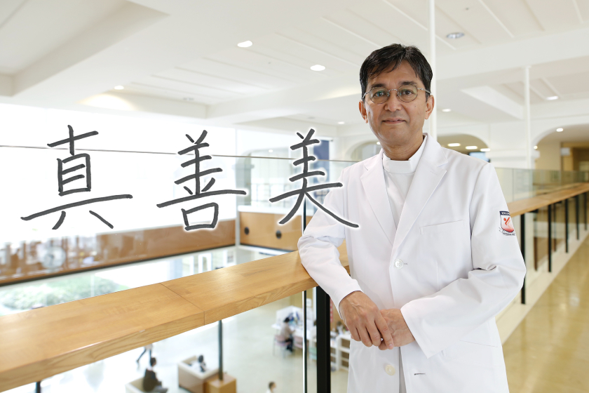

心臓血管外科 【心臓血管病センター】
Cardiovascular surgery

主任部長
大野 暢久
Profile
- 3学会構成心臓血管外科専門医認定機構 心臓血管外科専門医、修練指導医
- 日本外科学会 認定医、専門医、指導医
- 日本胸部外科学会 指導医 正会員 評議員
- 日本循環器学会
- 日本小児循環器学会
- 日本心臓血管外科学会
- 日本血管外科学会
- 日本心臓弁膜症学会
- 日本低侵襲心臓手術学会
- 日本ロボット外科学会
- 日本脈管学会
- 関西胸部外科学会 評議員

弁膜症、大動脈瘤、狭心症や心筋梗塞など、成人の心臓と大血管の外科治療が専門です。低侵襲心臓手術にも力を入れています。

京都大学、トロント大学、兵庫県立尼崎総合医療センターを経て、26年ぶりに小倉へ戻ってまいりました。私たちの目指すところは、最高の治療を安全に遂行するために全力を尽くし、ひいては患者さんに大いなる安心をお届けすることです。これまでの多くの経験を生かし、強力なチームを作ってまいります。いつでもどのようなことでもご相談ください。


部長
松尾 武彦
Profile
- 3学会構成心臓血管外科専門医認定機構 心臓血管外科専門医
- 日本外科学会 外科認定医, 外科専門医
- 日本胸部外科学会 正会員
- 日本心臓血管外科学会
- 日本循環器学会 循環器専門医
- 日本血管外科学会
- 日本冠動脈外科学会
- 腹部ステントグラフト実施医・指導医
- 胸部ステントグラフト実施医・指導医
- 経カテーテル的大動脈弁置換術（TAVR）実施医
- 関西胸部外科学会 評議員
- 米国AHA
- 欧州ESC
- 京都大学博士（医学）
- 京都大学非常勤講師
- 臨床研修指導医
虚血性心疾患（心筋梗塞、狭心症）、心臓弁膜症（大動脈弁狭窄症、僧帽弁閉鎖不全症、三尖弁閉鎖不全症など）、大血管（大動脈解離、大動脈瘤）の複合手術やリスクの高い手術も数多く手がけています。また、胸部腹部のステントグラフト治療や経カテーテル的大動脈弁置換術の治療も行っています。基礎分野では心筋細胞の再生を研究しています。
京都大学心臓血管外科の同門施設である、神戸中央市民病院、倉敷中央病院、高松赤十字病院等でトレーニングを行い、その後京都大学心臓血管外科で講師として臨床と教育にも携わってまいりました。2010年以来15年振りに小倉へ戻って来ました。地域病院や開業医の先生方と連携を取り、一人一人の患者さんに丁寧で質の高い医療を提供するために、より一層努力していきたいと思っております。
津丸 真一
- 部長
- 3学会構成心臓血管外科専門医認定機構 心臓血管外科専門医
- 日本心臓血管外科学会
- 日本胸部外科学会
- 日本血管外科学会
- 日本循環器学会 専門医
- 日本外科学会 専門医
- 米国AHA
- 欧州ESC
- 欧州ESVS
- 下肢静脈瘤に対する血管内焼灼術の実施基準による実施医
袴田 圭祐
- 副部長
- 日本外科学会 専門医
- 日本心臓血管外科学会
- 日本胸部外科学会
和田 裕樹
- 日本外科学会 専門医
- 3学会構成心臓血管外科専門医認定機構 心臓血管外科専門医
- 日本心臓血管外科学会
- 日本胸部外科学会
- 日本臨床外科学会
- 日本血管外科学会
- 日本循環器学会
- 日本ステントグラフト実施基準管理委員会
胸部ステントグラフト指導医
腹部ステントグラフト指導医
北方 悠太
- 日本心臓血管外科学会 専門医
- 日本外科学会 専門医
- 日本胸部外科学会
三原 大典
- 日本外科学会
- 日本心臓血管外科学会
- 日本胸部外科学会